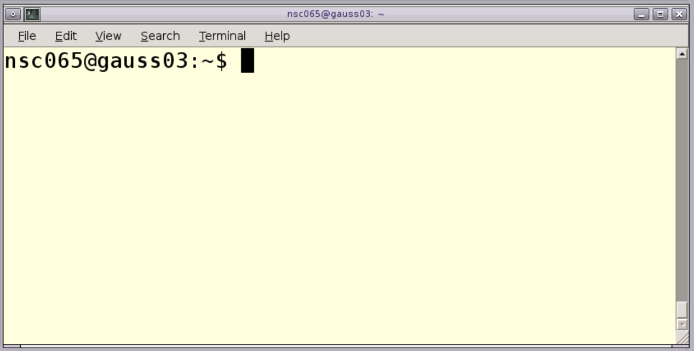
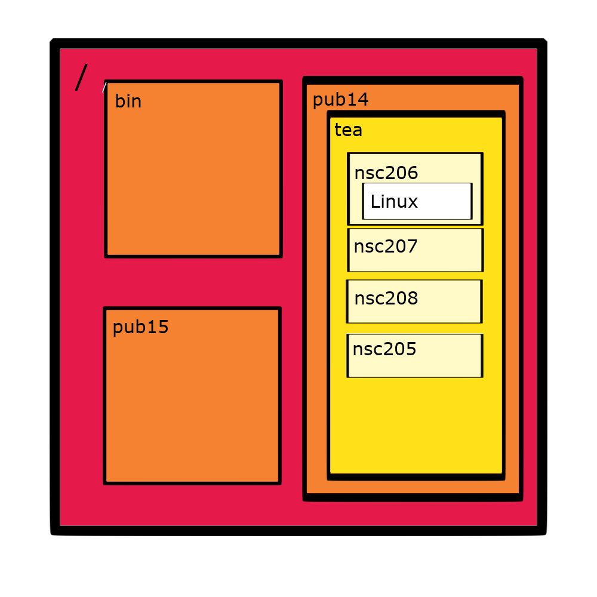

Intro to Linux
Matthew R. Gemmell
2024-02-23

Chapter 1 Introduction

Bioinformatics is an increasingly important skill for biological scientists. Many bioinformatic tools can only be run on Linux based operating systems. This course aims to introduce you to Linux and is aimed at beginners and novices to the command line.
Sessions will start with a brief presentation followed by self-paced computer practicals guided by an online interactive book. The book will contain theory, practice code, and exercises. Multiple choice questions will help reinforce what you have learnt throughout the book.
At the end of the course learners will be able to:
- Explain how the user, shell, and kernel interact with each other in the Linux OS.
- Navigate & manipulate directories in the Linux environment.
- List and view the contents of directories.
- Carry out a variety of commands with files including printing them to terminal.
- Utilise the text editor nano to create, edit, and save files.
- Understand the structure of fastq files.
There are additional materials in chapters 12-14 which include some advanced Linux commands and introductions to other programming languages used by bioinformaticians.
Commands are in the following font, colour, and box. They should be run in the command line.
In some chapters there are video walk-throughs. These are optional and give you a guided visual walk-through of running the practice code in the chapter. These are found in an expandable box at the start of the chapters 4,5,6, and 8.
Additionally, please use the cheatsheet as a reminder of all the commands you will be learning.
Table of contents
|
|
Logging in to our teaching VNC
|
|
|
|
|
|
|
|
|
Other Bioinformatics programming languages
|

This work is licensed under a Creative Commons Attribution-NonCommercial-ShareAlike 4.0 International License.
Chapter 2 Linux
Linux is a multitasking, multiuser Unix-like computer operating system (OS). Linux can run many different applications (multitasking) and it can be used by many different people (multiuser) on the same computer at the same time.
It is utilised by many programmers, including Bioinformaticians. It is a relatively easy OS to run commands and develop software for. The vast majority of programs and tools for computational analysis of biological data will work in Linux.
There are three parts of the Linux OS:
- The kernel: This is the hub of the operating systems. This is the “behind the scenes” part of the OS which allocates time and memory to programs. This controls the hardware.
- The shell: This acts as the interface between the user and the kernel. When a user runs commands, the shell will interpret these commands for the kernel. The shell can be any program that constitutes the user interface e.g. command line, internet browser, start menu etc.
- Programs: Programs allow the OS to perform specific tasks. Examples of programs include Internet browsers, genome assembly tools, text editors etc.

It is important to learn the Linux language so you can run commands on the command line. This is because:
- Many bioinformatic tools do not have a graphical user interface (gui) and so must be run on the command line.
- There are many powerful commands that can be run on the Linux command line.
- It is quicker and more reproducible to run commands through a shell than through a gui.
Chapter 3 Starting

3.1 Logon instructions
For this workshop we will be using Virtual Network Computing (VNC). Connect to the VNC with a browser by using the webVNC link you were sent.
You will now be in a logged-in Linux VNC desktop with two terminals. You will see something as below (there may be only one terminal which is fine). If you do not see something similar please ask for assistance.

If the VNC is taking up too much/little space of your browser you can use the zoom of your browser to adjust the size. Ensure you can see one whole terminal.
These instructions will not work outside of this workshop. If you would like to install your own Linux OS on your desktop or laptop we would recommend Mint Linux
The following link is a guide to install Mint Linux:
https://linuxmint-installation-guide.readthedocs.io/en/latest/
3.2 The Terminal Window
In our case the terminal window looks like the picture below. We are using the terminal window as our shell to interpret our commands to the kernel. Depending on your system and preferences it may look different.

Already there is useful information for us on the terminal window.
- nsc006: This is the login name, also known as the username. In this case nsc006 is a demonstrator’s account. Your screen should show a different account name which will be your username for the Linux machine/cluster you are logged into.
- gauss03: This is the machine name the user is logged into.
- ~: This represents the current directory of the user, or the directory a command was run in. In the Linux OS and others ‘~’ is a shortcut to the user’s home directory.
- Everything after the ‘$’ is where commands are typed into the terminal. This is also referred to as the command line.
To open a new terminal window, right click on the main screen, choose Applications -> Shell -> bash
3.3 Commands
Commands are typed into the terminal and then run by pressing “enter””

To run a command select your terminal by clicking on it or using “alt+shift”.
Now run the below command:
In this case echo is a command that prints out the term “Hello World”.
Now try:
There are many different Linux commands and we will run through a few. With a large variety it can be hard to remember all the commands and how they work.
Three convenient resources are:
- Search engines (e.g. Google): There are many forums where people ask for help with command line issues. If you have an issue and are not sure what to do, most likely someone else has had the same issue and asked for help on a forum. The tricky part of this is knowing the specific terminology to use when searching. Forums where people ask bioinformatics questions include SEQanswers, Stack overflow and biostars.
- Cheat sheets: It is never wrong to “cheat” when coding. Cheat sheets with many commands and good descriptions are very useful. Here is a good example of one: https://files.fosswire.com/2007/08/fwunixref.pdf
- Manual pages: Linux commands have many different parameters and options. If you ever need to figure out what they all are and what they do you can use the
mancommand.
E.g. The below command will show the manual page for the echo command:
The below command will show the manual page for the man command:
Note: The man page acts like using the command less (we will get into more specifics later). Important notes for now are to use the arrow keys to go up and down the page and press q to exit the manual
Note: There is a cheat sheet at the end of this document with all the commands covered in this practical.
Chapter 4 Directories and Files

4.1 Acquiring Workshop data
The first step to carry out is to copy the data for the workshop to your home directory.
4.1.1 Changing directories
Before copying you will change directory to your home directory.
cdis the command to Change Directory. It is followed by the directory you want to change to.- “~” represents your home directory.
Change directory to your home directory by running the following command in your terminal:
In Linux the default of cd is to change directory to your home directory. Therefore the following command will do the same as the above.
To determine your current working directory you can either look at the part of the terminal which displays it or you can use the command pwd (print working directory). Enter the following command:
In this case it will not show a “~” but the full path of your home directory. E.g. “/pub14/tea/nsc206/”.
- The first “/” is the root of the system. Every directory, subdirectory, file and program of the machine is within the root.
- “pub14/”: A directory within the root.
- “tea/”: A subdirectory of “pub14/” and a sub-subdirectory of the root (“/”).
- “nsc206”: The home directory of user nsc206. It is a subdirectory of “tea/” which is a subdirectory of “pub14/” which is a subdirectory of the root (“/”).
4.1.2 Copying
Now that we are in our home directory we can copy the data we need to it.
To do this we can use the command cp. This command is followed by the directory/file we want to copy then by the directory we want to copy it to.
To copy a directory we need to add the option -r which means recursively copy this directory and all its contents. Otherwise cp can only be used to copy files.
Use the below command to copy the workshop data to your current directory. The “.” refers to your current directory.
Now change directory into your newly copied directory.
Print to screen the path of your current working directory.
4.2 Directory structure
You can think of the directory structure in two different ways.
4.2.1 The Directory tree
This starts as the root (“/”) which branches out into directories and files. Directories contain files and subdirectories which contain files and subdirectories etc.
Below is an example of visualising the location of the “Linux” directory within the user ncs006’s home directory as a tree. This only includes a subset of directories.

4.2.2 Boxes
Another analogy to the directory structure is boxes and items. In this case there is one large box that contains all the boxes and items, this is the root (“/”). In the root are items and boxes which hold items and boxes etc.
Below is an example of visualising the location of the “Linux” directory within the user ncs006’s home directory as boxes. This only includes a subset of directories.

4.3 Paths

On the command line directories and files are referred to by paths e.g. “/pub14/tea/nsc206/Linux/” is a path.
Paths are case sensitive. The path “directory/file.txt” is different than “diRectory/File.txt”.
Spaces should always be avoided in path names. It is highly recommended to “_” instead. This is because spaces are used to separate options and parameters in commands.
There are multiple ways to refer to a path. The two main ways are through absolute paths and relative paths.
4.3.1 Absolute paths
Absolute paths are paths that start from the root e.g.
- “/pub14/tea/nsc206/Linux/”
- “~/Linux/” (In this case ~ is a shortcut which includes the root)
- “/pub14/tea/nsc206/file.txt”
4.3.2 Relative paths
Relative paths are paths that are relative to another location besides the root e.g.
- “.” (This means the current working directory).
- “..” (This refers to one directory up e.g. if the current directory was “/pub14/tea/nsc206/”, the “..” directory would be “/pub14/tea/”).
- “1_directory/”, would refer to the directory “1_directory/” in your current directory
4.3.3 Change directory examples
Below is a subset of valid methods to change directory into your “Linux/” directory
Note:change nsc2xx to your specific user name as shown on the command line prompt.
Method 1
Method 2
Method 3
Method 4
4.4 Listing Directory content
To list the contents (files and directories) within a directory you can use the ls command.
The output of ls will include file names that are coloured black and directory names that are coloured blue in our VNC terminals.
Before carrying out the below commands make sure you are in your “Linux” directory with the pwd command.
List the contents in your current directory:
List the contents in your home directory:
List the contents in the root directory and put each separate file/directory on a separate line. In the below command the -1 is a parameter that indicates there will be only 1 piece of content on each line. Note: -2, -3 etc are not parameters that work with ls.
Reminder: you can use the man command to look at more options for commands.
ls is my most typed command. I am consistently using it to see what directories and files are in my current directory and other directories. I suggest you do the same.
4.5 MCQs: Files & Directories

Please attempt to answer the below Multiple-Choice Questions to reinforce what you have learnt in this chapter.
- What command lists the contents of directories?
- What command changes directory?
- What command copies files and directories?
- Choose the option that represents the root directory.
- Choose the option that represents your home directory.
- Choose the option that represents one directory above.
- Which path is an absolute path?
- Which path is a relative path?
Chapter 5 Tips and tricks

5.1 Tab complete
Tab complete is a method to quickly type commands and file paths without error. In bioinformatics tab complete is your best friend. The tab key looks like:
 Tab complete serves the following purposes:
Tab complete serves the following purposes:
- To complete path names and commands
- To list all content that starts with what you have already typed
- To ensure you have no typos
In the below examples press the tab button when you see <tab> and replace 2xx with your user number.
Move into the directory “1_directory”
Print out all the content within the current directory that starts with “1_” in the file or directory name. This is carried out with a double tab.
Note: the “./” is put before the 1 so it only looks in the current directory otherwise it will also look for commands.
List the contents of directory “1_1_directory”
Change directory to “1_2_directory”. The “./” is not needed before the file name as tab will only look for directories because it is used for an argument of the cd command.
Change directory to example_1_part_1. The last tab will add the “/” to the end of the directory name, this informs you that you have correctly and fully typed in the directory name. However, this will not always occur if there is another directory name that starts the same but is longer. That is where double tab comes in handy.
In this practical session I have given paths purposefully long names. This has been carried out to demonstrate the usefulness of tab complete and to encourage its use. Although they have been artificially extended in this case, in Bioinformatics long and informative path names are advised.
5.2 Ending a command
There are times when you will want to abandon a command on the command line. To do this simple press ‘Ctrl’ + ‘c’.
This is useful if a command won’t respond or you noticed you have run a command with a typo or with the wrong file.
5.3 History
 Linux will save commands you have previously entered. In the terminal, whilst at the command line, you can press the up and down keys to scroll through your history. You can then rerun previous commands or edit them with the left and right arrow keys, and run the edited version.
Linux will save commands you have previously entered. In the terminal, whilst at the command line, you can press the up and down keys to scroll through your history. You can then rerun previous commands or edit them with the left and right arrow keys, and run the edited version.
5.4 Clear
The clear command can be used to clear all the text from the terminal. This is useful for keeping a tidy terminal.
5.5 Bash escape
To continue a command on a new line on the command line use the backslash character, \. When you press \ followed by enter, the command will not run and you will be on a new line on the command line. This can be useful for clarity and for long commands.
In the below example press “enter” after the end of a line.
Print to screen the term “Hello universe, today is a very nice day. Don’t you think so?”
Notice that there is a space before the \. This is because there needs to be a space between the echo and text to print out. It is always recommended to use a space before a \ to bash escape.
Bash escape is useful for this document as it will show if commands in this document are separate commands or one command over multiple lines.
5.6 Annotations

You can annotate your code so it will not run. This is carried out by putting a # at the start of a code line.
An example:
#This line is annotation and will not run
#The below line will print out the text "this line is not annotated"
echo "this line is not annotated"This is useful to give yourself information about what your code is doing and it is vital if you are creating scripts. We will also use annotations in this workbook to explain what some lines of code are doing.
I also find it useful to put a # at the front of a long command that I am typing or editing. This means the command won’t run if I accidentally press enter. Just be sure to remove the # at the start of the line before you want to run it.
5.7 MCQs: Tips & tricks

Please attempt to answer the below Multiple-Choice Questions to reinforce what you have learnt in this chapter.
- What allows you to auto fill paths and commands so you can quickly type without error?
- What command clears text from the terminal?
- What symbol is used for annotation?
- What keyboard short cut cancels/ends a command?
- What keys scroll through your previously run commands (aka history)?
- Bash escape allows you to run commands over multiple lines. What symbol is used for bash escape?
Chapter 6 Manipulating directories

6.1 Make a directory
To make a directory the command mkdir is used.
For the below examples we will be making heavy use of ls so you can hopefully visualise the contents of the directories.
Type in the following commands to make a subdirectory within the “CGR_Linux” directory called “Chicken” then make a subdirectory within “Chicken” called “Egg”.
#Change directory to CGR_linux in your home (~)
cd ~/Linux/
#Always good to list contents when you move into a directory
ls
#Make a directory called Chicken in your current directory
mkdir Chicken
#Make a subdirectory of Chicken called Egg
mkdir Chicken/Egg
#List the contents of the Chicken directory
ls ChickenTip: You can use the up arrow key to get to previously run commands which you can edit using the right and left keys.
6.2 Moving Directories and Files

Files and directories can be moved with the mv command. This can also be used to change the name of a file or a directory.
Note: If you move a file to the path of a file that already exists, the pre existing file will be overwritten.
First ensure your working directory is the “Linux” directory.
Move the “Chicken” directory into the “3_chicken_farm/3_1_hut/” directory. This will move the directory and all its contents.
#Before moving list the contents of the the destination directory
ls 3_chicken_farm/3_1_hut/
#Also list the contents of the current directory to ensure
#Chicken is present
ls
#Move Chicken to 3_chicken_farm/3_1_hut/
mv Chicken/ 3_chicken_farm/3_1_hut/
#List the current directory and destination
ls . 3_chicken_farm/3_1_hut/Move the Directory “3_chicken_farm/3_1_hut/Chicken/” to “3_chicken_farm/3_2_field” and rename it “Outdoor_Chicken”.
#List the contents of the start directory
ls ~/Linux/3_chicken_farm/3_1_hut
#Move the Chicken directory whilst renaming it
mv ~/Linux/3_chicken_farm/3_1_hut/Chicken/ \
~/Linux/3_chicken_farm/3_2_field/Outdoor_Chicken
#List the contents of the destination directory
ls ~/Linux/3_chicken_farm/3_2_field/Outdoor_ChickenMove the file “3_chicken_farm/3_3_supplies/feed.txt” to the directory “3_chicken_farm/3_2_field” and rename it “used_feed.txt”
6.3 Copying Directories and Files
Files and directories can be copied with the cp command. Directories and files can be copied to any directory and given a new name.
Note: If you copy a file to the path of a file that already exists, the pre existing file will be overwritten.
Before running the below commands move into your “~/Linux/3_chicken_farm/” directory.
Copy the file “3_1_hut/Laid_Egg.txt” to the “3_2_field” directory and give it the filename “Chick.txt”
#List contents of 3_1_hut
ls 3_1_hut
#Copy Laid_egg to another directory as a new file called Chick.txt
cp 3_1_hut/Laid_Egg.txt 3_2_field/Chick.txt
#List contents of 3_2_field
ls 3_2_fieldCopy the file “3_2_field/Chick.txt” and give the copy the name “Chick_2.txt”
#List contents of 3_2_field
ls 3_2_field
#Copy the Chick.txt file as Chick_2.txt
cp 3_2_field/Chick.txt 3_2_field/Chick_2.txt
#List contents of 3_2_field
ls 3_2_fieldCopy the directory “3_1_hut” to “3_1_hut_2”
6.4 Deleting Files and Directories
 To delete files and directories the command
To delete files and directories the command rm can be used.
Important: This command can be very dangerous. There is no recycle bin on Linux machines so once you delete something it cannot be recovered. Be very careful when deleting files and directories. To avoid major loss try to keep backups of important data and scripts.
Ensure you are in your “3_chicken_farm/” directory
Remove the file “3_2_field/Chick_2.txt”
#List contents of 3_2_field
ls 3_2_field
#Remove Chick_2.txt
rm 3_2_field/Chick_2.txt
#List contents of 3_2_field
ls 3_2_fieldRemove the directory “3_1_hut_2/” and its contents
6.5 MCQs: Manipulating directories

Please attempt to answer the below Multiple-Choice Questions to reinforce what you have learnt in this chapter.
- What command removes files and directories?
- What command moves files and directories?
- What command makes a new directory?
- What option is needed for moving or removing a directory?
- What command list the contents of directories?
Chapter 7 Exercise 1
 Perform the following tasks with the skills and knowledge you have gained.
Perform the following tasks with the skills and knowledge you have gained.
Change the name of the subdirectory “four_exercises” within your “Linux” directory to “4_exercises”
- Make a backup of the “4_exercises” directory
- List the contents of the “4_exercises” directory
- Within the directory “4_exercises”
- Print the working directory.
- Print out to screen the phrase ‘the echo command allows me to print phrases to screen’.
- Copy the file “copy_this_file.txt” to the directory “to_me”
- Rename the directory “to_me” to “you”
- Delete the initial “copy_this_file.txt” file
You can check my solutions in the Answers section. These are not the definitive solution but only examples of solutions. If your method works and you understand why then you have done it correctly.
Chapter 8 File reading and processing
 There are many ways to show the contents of a file. Below are a few examples.
There are many ways to show the contents of a file. Below are a few examples.
The files for the examples are within the directory: “/pub14/tea/nsc2xx/Linux/5_reading_files/” (replace xxx with your user number).
8.1 Print out a file
 The
The cat command will print out the entire contents of a file to the screen. This is useful for small text files and pipelines (pipelines are not covered here).
Example commands are below (remember to replace xxx with your user name number):
Note: remember tab complete and using the arrow keys
Print contents of “short_file.txt” to screen
Print contents of “Scientist.txt” to screen
Print contents of “ecoli.gbk” to screen
Remember: The clear command.
8.2 head and tail
 The
The head command will print out to screen the top n lines of a file.
The tail command will print out to screen the bottom n lines of a file.
The default value is 10. The -n option can be used to indicate how many lines to print out.
Carry out the below commands in the directory “/pub14/tea/nsc2xx/Linux/5_reading_files/”
Print out the top 10 lines of “ecoli.gbk”
Print out the bottom 10 lines of “ecoli.gbk”
Print out the top 25 lines of “ecoli.gbk”
Print out the bottom 2 lines of “ecoli.gbk”
Print out all but the bottom 2 lines of “Scientist.txt”
Print out all lines starting from the 2nd top line of “Scientist.txt”
Print out all but the bottom 5 lines of “Scientist.txt”
Print out all lines starting from the 3rd top line of “Scientist.txt”
Print out the top 25 lines of “ecoli.gbk”
Print out the bottom 2 lines of “ecoli.gbk”
8.3 File viewing with less
 The
The less command will display a file’s contents one page at a time. Various keys on the keyboard will allow you to navigate the contents of the files. The below actions will occur identically with the man command.
- q : Exit
- up and down arrow keys : Will move up/down 1 line at a time
- space : Move down one page
- b : Move up one page
/: Follow this by a term to search for it in the file’s contents- n : Find the next occurrence of the term last searched for
- N : Find the previous occurrence of the term last searched for
- g : Jump to the first line of the file
- G : Jump to the bottom line of the file
Use the less command to view the contents of the “ecoli.gbk” file. Then find the 3rd occurrence of the word ‘ribosome’. Afterwards move around the file.
Look at the manual for less and search for the first occurrence of the string ‘percent’. Afterwards look around the manual page.
8.4 Word count
 The
The wc command will allow allow you to word count files. It will display line, word and byte counts for files in that order.
Use wc to see the line, word and byte count of the “short_file.txt” and “ecoli.gbk” files. As you can see you can carry this out on multiple files at once.
Count the number of characters in the “short_file.txt” file
Count the number of lines in the “ecoli.gbk” file
8.5 Pattern searching
The grep command will search for a pattern in a text file and output all the lines containing the pattern.
Print out the lines from “Scientist.txt” that have the number 18 in them. In this particular example it prints out all scientists which were born in the 1800s. This will not always be the case depending on the data in the file.
Print out the lines which have the string “Ada” in them.
Print out the lines which have the string “ada” in them. There should be none, as grep is case sensitive.
Type in the following command.
The above command will be stuck as grep does not know what it is looking for. To cancel the command use ‘Ctrl’ + ‘c’
8.6 Text editor
 Three of the most popular text editors are vim, gedit and nano. Below are quick introductions to nano and vim.
Three of the most popular text editors are vim, gedit and nano. Below are quick introductions to nano and vim.
nano is the easiest to learn but is quite limiting. vim and gedit are quite similar in power with different people preferring one or the other.
The below will teach you nano. If you are interested in learning vim in the future you can find a quick guide in the appendix.
8.6.1 nano
 To enter the
To enter the nano text editor you can use the command nano. The command is: nano file.txt.
nano can be run with a previous file name which you can then edit or a new file name in which case you will create a new file.
Once you are in the editor you can type characters and move around with the arrow keys.
To carry out specific functions you will need to use Ctrl or Alt with another key. At the bottom of the editor are a few examples where the ^ indicates Ctrl. For example the ^G Get Help means you need to press Ctrl+G to get help. When you use letters this way in nano they are case insensitive (i.e. the CAPS lock can be on or off and you will get the same result).
After you carry out a function ensure you look at the bottom of the editor again as it may ask you to type something or you may get a new series of functions you can use.
Below are some important examples:
- Ctrl+X - Exit nano
- Ctrl+S - Save file
- Ctrl+O - Save file as
- Ctrl+A - Jump to the start of a line
- Ctrl+E - Jump to the end of a line
- Ctrl+W - Start search (Where is) Note This unfortunately is also the shortcut to close a tab in internet browsers. Therefore this can’t be used with our webVNC.
- Alt+W - Continue search forward (find next occurrence forward)
- Alt+Q - Find next occurrence backward
- Alt+K - Cut current line
- Alt+\ - Go to the first line
- Alt+/ - Go to the last line
8.6.2 Tasks
Carry out the following tasks in the directory: “/pub14/tea/nscxx/Linux/5_reading_files/”
Using a text editor (nano or vim) add an entry for Scientist Mae Jemison (Born: 1956) to the file “Scientist.txt”. The names and date are separated by one tab.
Using your text editor of choice delete all the scientists born before 1000 in the “Scientist.txt” file and save this as “Scientist_post_1000.txt”.
8.7 MCQs: File reading and processing

Please attempt to answer the below Multiple-Choice Questions to reinforce what you have learnt in this chapter.
- What command searches for a pattern?
- What command word counts files?
- What command prints the contents of a file?
- What command displays a file’s contents one page at a time and allows keyboard navigation?
- What command prints out the top n lines of a file
- What command prints out the bottom n lines of a file
Chapter 9 Recap

Throughout this practical we have covered the topics:
- Linux
- Multiuser Multitasking OS
- User, Shell and Kernel
- Running commands on the command line
- Search engines, cheat sheets and manual pages
- Commands:
man
- Useful Linux practice and commands
- Tab complete
- Up and Down arrow keys to access history
- ‘Ctrl’ + ‘c’ to stop a command
- Commands:
clear
- Files and Directories
- Navigating through directory structure and looking at files with paths
- Commands:
cd,pwd,ls,mkdir
- Manipulating files i.e. creating, copying, moving, deleting
- Commands:
cp,mv,rm
- Commands:
- Looking at files
- Commands:
cat,head,tail,less,wc,grep
- Commands:
- Text editor
- Commands:
vim
- Commands:
Note: There is a cheatsheet at the end of this book with these commands.
Chapter 10 Fastq format
The next exercise will focus on a set of files including fastq files.
- Fastq files are very commonly used in bioinformatics.
- Fastq files contain DNA or Amino acid sequenceing data.
- Fastq files contain the nucleotide/amino acid content and its sequencing quality for sequences.
- Generally these files are separated by sample but not always.
- A fastq file acts as a normal txt file that can be read but is of a specific format.
- One fastq file contains many fastq entries, one after the other.
- Each fastq entry contains four lines.
- One fastq entry represents one sequence.
The format of one entry is as below:
@Sequence 1
CTGTTAAATACCGACTTGCGTCAGGTGCGTGAACAACTGGGCCGCTTT
+
=<<<=>@@@ACDCBCDAC@BAA@BA@BBCBBDA@BB@>CD@A@B?B@@
The lines represent:
1. Header for fastq entry known as the fastq header. This always begins with a ‘@’.
2. Sequence content of sequence
3. Quality header. Always begins with a ‘+’. Sometimes also contains the same information as fastq header.
4. Quality values for each base in the 2nd line. NOTE: ‘@’ can be used as quality values.
For more information on the fastq format the below resource is good: https://en.wikipedia.org/wiki/FASTQ_format
Chapter 11 Exercise 2
 The directory “~/Linux/6_final_exercise/” has all the files you need. Below is a set of tasks and questions that will require all the skills you have gained from this practical.
The directory “~/Linux/6_final_exercise/” has all the files you need. Below is a set of tasks and questions that will require all the skills you have gained from this practical.
- See what files are in the directory.
- Rename the file “3-P£_CACTTCGA_L001_R1_001.fastq” as “3-P3_CACTTCGA_L001_R1_001.fastq”.
- Make a backup of the files in a directory called backup.
- How many reads are in the samples?
- Remove the fastq files with no data.
- Update the backup files with the previous change.
- Check if the 1st read names match in the paired files.
- Check if the last read names match in the paired files.
- In file “1-P1_ATGCCTGG_L001_R1_001.fastq” look for sequence headers with the term ‘psychrobacter’.
- In the sample 1-P1 remove any fastq entries where the term ‘psychrobacter’ appears in the fastq header. Do this for the R1 and R2 files.
- Print to screen the fastq header, sequence and quality data for the 25th sequence in sample 2-P2 for both the R1 and R2 file. Do this with one command for R1 and a separate command for R2.
You can check my solutions in the Answers section. These are not the definitive solution but only examples of solutions. If your method works and you understand why then you have done it correctly.
Chapter 12 Advanced Linux practice
 We have covered a small amount of Linux coding. This should be sufficient to carry out our future workshops but if you were to continue in bioinformatics we would recommend learning more advanced methods.
We have covered a small amount of Linux coding. This should be sufficient to carry out our future workshops but if you were to continue in bioinformatics we would recommend learning more advanced methods.
Below are some short sections to introduce you to some more advanced linux coding techniques. These give you a quick overview and some examples. This will hopefully put you in a good position to allow you to to learn these techniques in more depth outside of this workshop.
The following sections will all be run with the files in the directory “~/Linux/advanced_practice/”. Therefore ensure you are in this directory before running the below examples. This contains fastq and txt files for 20 samples. Each sample contains a fastq file and txt file for uncorrected and corrected reads. These fastq files are single end (i.e. there is no reverse/R2 reads).
12.1 Wildcard characters
 These are characters that can be used to represent a variety of other characters. This can be useful for deleting many files, searching for files with specific patterns in their names and more!
These are characters that can be used to represent a variety of other characters. This can be useful for deleting many files, searching for files with specific patterns in their names and more!
Be very careful when using wildcard character with the command rm.
Three basic and useful wildcards include:
*- This represents zero or more characters
?- This represents a single character
[]- This represents a range of characters
Below are various examples you can run to show wildcards in action.
List all the files and directories in the working directory
List all files ending in “.fastq”
List all files ending in “.txt”
List all files with the string “corrected” somewhere in the file name
List all files with the string “corrected” somewhere in the file name and it ends in “fastq”
List all files that begin with “sample_2”
List all files that begin with “sample_2_”
List the files that begin with “sample_1” and ends with “AAAA.txt”. It may have zero or more characters between these two.
List the fastq files of samples with a single digit number
List the txt files of samples with a number in the tens
List the txt files for samples 3,4,5,6 & 7 i.e. 3-7
List the txt files for the non corrected information of samples with single digits.
List the corrected txt files for samples with numbers divisible by 10.
12.2 Redirection
 Redirection allows you to put the output of a command to a file. The redirect symbol is
Redirection allows you to put the output of a command to a file. The redirect symbol is >. Be careful when redirecting as it will overwrite any existing files. To append to the bottom of a file use >>.
Below are various examples of redirecting in action.
Create a file called ecoli.tmp containing the text “I am escherichia coli”
Create a file called pcryohalolentis.tmp containing the text “I am psychrobacter cryohalolentis”
Create a new file called bacteria.tmp which will contain the text from ecoli.tmp and pcryohalolentis.tmp
Create a file called vcholerae.tmp containing the text “I am not ecoli or pcryohalolentis”
cat the file vcholerae.tmp and redirect it to bacteria.tmp.
Look at the contents of bacteria.tmp
This has removed the ecoli and pcryohalolentis lines. Append the contents of ecoli.tmp and pcryohalolentis.tmp to bacteria.tmp and then check the file
Put information regarding number of lines of all the fastq files into a new file called fastq_lines.tmp
Now delete all the files that were created in the above examples. Again be very careful about using the rm command with wildcards.
12.3 Pipes
 Pipes allow you to put the output of one command to the input of another. For example you could use
Pipes allow you to put the output of one command to the input of another. For example you could use grep to get all the lines with a certain string and pipe the output to wc to count the number of lines that have the specific string.
The pipe symbol is |. This is normally found on your keyboard directly left of the Z key. Weirdly the symbol is represented by | but split in the middle on some keyboards.
A useful tip when building up longer pipes is to start with a smaller amount of data and check the output of each step as you go. To do this you could use head instead of cat whilst testing.
Below are various examples of piping in action
Print to screen the second last fastq entry of the file sample_20_ATAC_corrected.fastq
Note: In the above command the tail command is working on the output of the cat command. Therefore this would not work to get the second last fastq entry of multiple files. For example the following command would print the second last fastq entry of the last fastq file (i.e. sample_9_AAGA.fastq due to file ordering)
Count the number of lines within all the fastq files
Count the number of lines which contain the text “TAG” within all the fastq files
12.4 Regular expressions
Regular expressions are similar to wildcard characters but more complex and used for commands like grep and sed.
Below are a basic set of regular expressions:
.: A single character
?: The preceding character matches 1 or 0 times
*: The preceding character matches zero or more times
+: The preceding character matches one or more times
{n}: The preceding character matches exactly n times
{n,m}: The preceding character matches n to m times
[AT]: The character is one of the characters in the brackets
[^CG]: The character is not one of those in the brackets
[1-7]: The character is 1,2,3,4,5,6 or 7. This works with letters too.
(): Group several characters into one
|: Logical OR operator
^: Matches the beginning of the line
$: Matches the end of the line
Below are various examples of regular expressions in action.
Look at the contents of metadata.txt
!Print out the lines for the Healthy patients
Print out the lines for the IBD patients from Craigavon and Belfast. In the below command \ is used to allow | to be used as an or operator instead of acting as a string to match.
Print out the lines for the Pre information of patients not from Edinburgh or Aberdeen
Print out the lines for patients 1,2,3 and 4
Print to screen every fastq header of file sample_15_AACG_corrected.fastq
In the piping examples we counted the number of lines with the text “TAG” within the fastq files. However this also counted fastq headers due to the name of the samples. Let us use a regular expression to only count the number of sequences within the fastq files that contain “TAG”.
Print to screen every line within the file sample_3_AAAG_corrected.fastq that has a possible Threonine codon in the forward direction.
In the above example fastq quality lines are also extracted as some of them also contain the pattern we are searching for. To get around this we can pipe. First grep the fastq quality header (i.e. +), as no other line only contains “+”, and the line before it. Then we can remove lines with only a plus with an invert grep. Finally we can grep for the threonine pattern using only the sequence lines. Let us build this up step by step.
Print to screen the fastq quality header plus the one line preceding each (i.e. Sequence line) for file sample_3_AAAG_corrected.fastq.
Now pipe this output so it removes the lines with “+” (fastq quality headers) and “–” (separators of each grep match provided by grep because of the -B 1 option).
Now from this output, grep for the Threonine pattern plus colour each match within the line with the option “–color”.
Let us repeat the above but add the possibility of the threonine being in the reverse direction.
grep -B 1 "^+$" sample_3_AAAG_corrected.fastq | grep -v "+\|--" \
| grep --color "AC[ACTG]\|[ACTG]CA"Resources to learn more in the future
Rex Egg, A good resource to learn more about regular expressions:
Cheatsheet:
https://www.rexegg.com/regex-quickstart.html
Regex Crossword, A online game like soduku that is useful to practice regular expressions. Best used in conjunction with the above cheat sheet:
12.5 sed
This is a complicated yet powerful command that can be used to edit text files quickly and efficiently. The main use is to substitute text with other text. sed can be used with regular expressions.
The basic outline of a sed substitute command is as below. In the below case s/ signifies that sed will be used for substitution
Below are some examples of sed in action.
Print out a list of all the sample names using the fastq files
First print out the contents of the file metadata.txt
Print out metadata.txt and change IBD to DISEASE without altering the file
or
sed is case sensitive and will by default only replace the first instance it finds within each line.
Print metadata.txt to screen and then change the “P” in “Patient” to “Human_P”
To replace every instance of the old pattern within each line g can be added after the last /. This stands for global therefore it changes the command to a global substitute.
Print metadata.txt to screen and change every occurrence of a number to “number”. To get the regular expression meaning of “+” it needs a “\” before the “+”
The file metadata.txt is tab delimited (i.e. there is a tab between each column. Make a comma separated file containing the information of metadata.txt called metadata.csv (csv = comma separated value). \t presents a tab.
For a very in depth look into the sed command please look at the following link: http://www.grymoire.com/Unix/Sed.html
12.6 Permissions
All files, directories and programs have permissions. It is important to know about this so you know your read, write and executability permissions for the content within machines.
Below is a useful link to learn about file permissions:
https://www.guru99.com/file-permissions.html
12.7 MCQs: Advanced linux

Please attempt to answer the below Multiple-Choice Questions to reinforce what you have learnt in this chapter.
- Which symbol is used to pipe the output of one command to the input of another?
- What command can be used to substitute text with other text?
- Which symbol is used to redirect the output of a command to a file?
- Which wildcard represents a single character?
- Which wildcard represents zero or more characters?
- Which wildcard represents a range of characters?
- Which regular expression indicates that the preceding character matches 1 or 0 times?
- Which regular expression represents a single character?
- Which regular expression indicates that the preceding character matches zero or more times?
- Which regular expression matches the end of the line?
- Which regular expression is a logical OR operator?
- Which regular expression matches the start of the line?
Chapter 13 Advance practice exercise

- Copy the directory ~/Linux/advanced_practice to ~/Linux/advanced_practice_exercise
- Move into ~/Linux/advanced_practice_exercise
- Make a directory called fastq and one called txt
- With one command move all the fastq files into the directory fastq
- With one command move all the txt files, excluding metadata.txt and samples.txt, into the directory txt
- Create a file in the fastq directory called patient_1_corrected.fastq and put all the corrected fastq data for patient_1 into the file. You can look at the metadat.txt file to see which samples belong to patient_1.
- Append the metadata line for sample_1_AAAA to the bottom of the file sample_1_AAAA.txt in the txt directory.
- For all the corrected fastq files find the sequences that start with a stop codon in the forward orientation (i.e. TAG, TAA or TGA). Print out to screen the sample name and sequence info separated by a “:” only (e.g. sample_10_AAGT:TAAGAGAACAATGAACAGATATTAATAATTTTGCCGCTTTTCTGCGGGAT)
- Count the number of Gs and Cs within file sample_16_AACC.fastq
- Get the fastq headers of sequences with homopolymers made of As with a length of 5 or greater for the uncorrected fastq files for samples 3,4,5,13,14 and 15 with one command.
You can check my solutions in the Answers section. These are not the definitive solution but only examples of solutions. If your method works and you understand why then you have done it correctly.
Chapter 14 Bioinformatic Languages

Unfortunately you cannot do everything you would want directly on the Linux command line. Even the tasks you can do are sometimes not very efficient or easy. Fortunately there are many other programming languages you can use. There is a large amount of other programming languages and it can be hard to know which one to learn. Below is a list of commonly used bioinformatic program languages with a brief summary on their purpose and links to online resources to introduce you to the language.
14.1 awk
awk is typically used as a data extraction and reporting tool. It is very good due to its power and versatility.
Tutorial:
http://www.grymoire.com/Unix/Awk.html
Manual:
14.2 Python
Python is used for software development and other applications It is favoured in Bioinformatics due to its relative ease to learn and it is able to handle strings well (i.e. genetic code). There are also many packages for python that help the analysis of biological data and other scientific data.
Python website:
BioPython:
14.3 Perl
Perl is a similar language to python with similar uses. The main difference is how they look.
Tutorial:
https://www.tutorialspoint.com/perl/perl_introduction.htm
Perl website:
BioPerl:
14.4 Python or Perl?
Generally speaking people normally choose to either learn python or perl. However there are many bioinformatic tools written in perl and many written in python. Therefore it is good to know a bit in both so you can debug scripts and specialise in one so you can write your own scripts. Our suggestion would be to specialise in Python due to its ease to learn and its growing popularity in the Bioinformatics field. However there are also other upcoming programming languages that are becoming more popular in bioinformatics, so you may like to give them a look.
14.5 Ruby
 A programming language that is becoming more popular in bioinformatics due to its beginner friendliness.
A programming language that is becoming more popular in bioinformatics due to its beginner friendliness.
Tutorial:
Ruby website:
BioRuby:
Why learn Ruby?
14.6 Golang (AKA Go)
 Another easy programming language with a library specifically made for bioinformatics.
Another easy programming language with a library specifically made for bioinformatics.
Tutorial:
https://tour.golang.org/welcome/1
Go website:
biogo:
14.7 R
 R is a very powerful programming language for statistical analysis and visualisation. It unfortunately has a large barrier to entry and normally quite unclear documentation. However it will unlikely be surpassed by another language any time soon due to its widespread use and large amount of very useful and powerful packages for various uses in the public domain. We would recommend using the IDE Rstudio when using R.
R is a very powerful programming language for statistical analysis and visualisation. It unfortunately has a large barrier to entry and normally quite unclear documentation. However it will unlikely be surpassed by another language any time soon due to its widespread use and large amount of very useful and powerful packages for various uses in the public domain. We would recommend using the IDE Rstudio when using R.
Tutorial:
R Website:
Cran Website:
Rstudio Website:
Exercise 1
Ensure you are in the correct directory before carrying out the below commands
- Change the name of the subdirectory 4_exercises_aaaa within your Linux to 4_exercises
- Make a backup of the 4_exercises directory
- List the contents of the 4_exercises directory
- Within the directory 4_exercises
Print the working directory
- Print out to screen the phrase ‘the echo command allows me to print phrases to screen’
- Copy the file copy_this_file.txt to the directory to_me
- Rename the directory to_me to you
- Delete the initial copy_this_file.txt file
Exercise 2
Ensure you are in the correct directory before carrying out the below commands
- See what files are in the directory
- Rename the file 3-P£_CACTTCGA_L001_R1_001.fastq to 3-P3_CACTTCGA_L001_R1_001.fastq
- Make a backup of the files in a directory called backup
mkdir backup
cp 1-P1_ATGCCTGG_L001_R1_001.fastq backup/
cp 1-P1_ATGCCTGG_L001_R2_001.fastq backup/
cp 2-P2_AAGGACAC_L001_R1_001.fastq backup/
cp 2-P2_AAGGACAC_L001_R2_001.fastq backup/
cp 3-P3_CACTTCGA_L001_R1_001.fastq backup/
cp 3-P3_CACTTCGA_L001_R2_001.fastq backup/
cp 4-E1_ATTGGCTC_L001_R1_001.fastq backup/
cp 4-E1_ATTGGCTC_L001_R2_001.fastq backup/
cp metadata.txt backup/This can be done a lot quicker with the use of wildcard characters (Covered in Advanced Linux section)
- How many reads are in the samples? The below command will give the number of lines in the files, this number can then be divided by 4 (mentally or using a calculator). These values will be the same for the R2 files as they are for the matching R1 file.
wc -l 1-P1_ATGCCTGG_L001_R1_001.fastq \
2-P2_AAGGACAC_L001_R1_001.fastq \
3-P3_CACTTCGA_L001_R1_001.fastqAn advanced method using regular expressions, wildcard characters and grep
- Remove the fastq files with no data Check which files have no data
wc \
1-P1_ATGCCTGG_L001_R1_001.fastq 1-P1_ATGCCTGG_L001_R2_001.fastq \
2-P2_AAGGACAC_L001_R1_001.fastq 2-P2_AAGGACAC_L001_R2_001.fastq \
3-P3_CACTTCGA_L001_R1_001.fastq 3-P3_CACTTCGA_L001_R2_001.fastq \
4-E1_ATTGGCTC_L001_R1_001.fastq 4-E1_ATTGGCTC_L001_R2_001.fastq Remove empty files
- Update the backup files with the previous change
- Check if the 1st read names match in the paired files
head -n 1 \
1-P1_ATGCCTGG_L001_R1_001.fastq 1-P1_ATGCCTGG_L001_R2_001.fastq \
2-P2_AAGGACAC_L001_R1_001.fastq 2-P2_AAGGACAC_L001_R2_001.fastq \
3-P3_CACTTCGA_L001_R1_001.fastq 3-P3_CACTTCGA_L001_R2_001.fastq - Check if the last read names match in the paired files
tail -n 4 \
1-P1_ATGCCTGG_L001_R1_001.fastq 1-P1_ATGCCTGG_L001_R2_001.fastq \
2-P2_AAGGACAC_L001_R1_001.fastq 2-P2_AAGGACAC_L001_R2_001.fastq \
3-P3_CACTTCGA_L001_R1_001.fastq 3-P3_CACTTCGA_L001_R2_001.fastq - In file 1-P1_ATGCCTGG_L001_R1_001.fastq look for sequence headers with the term ‘psychrobacter’
- In the sample 1-P1 remove any fastq entries where the term ‘psychrobacter’ appears in the fastq header. Do this for the R1 and R2 file.
- Using nano use “Ctrl+W” to search for psychrobacter. Then use “Ctrl+K” to cut the lines followed by “Ctrl+W” and “Ctrl+X” to save and exit.
- Using vim with “/” to search for psychrobacter, “dd” to delete lines and “:wq” to save the file and exit it.
- Print to screen the fastq header, sequence and quality data for the 25th sequence in sample 2-P2 for both the R1 and R2 file. Do this with one command. @24_ecoli is grepped as the first sequence is @0_ecoli
Advanced exercise
1. Copy the directory ~/Linux/advanced_practice to ~/Linux/advanced_practice_exercise
- Move into ~/Linux/advanced_practice_exercise
- Make a directory called fastq and one called txt
- With one command move all the fastq files into the directory fastq
- With one command move all the txt files, excluding metadata.txt and samples.txt, into the directory txt.
- Create a file in the fastq directory called patient_1_corrected.fastq and put all the corrected fastq data for patient_1 into the file.
- Append the metadata line for sample_1_AAAA from metadata.txt to the bottom of the file sample_1_AAA.txt in the txt directory.
- For all the corrected fastq files find the sequences that start with a stop codon in the forward orientation (i.e. TAG, TAA or TGA). Print out to screen the sample name and sequence info separated by a “:” only (i.e. sample_10_AAGT:TAAGAGAACAATGAACAGATATTAATAATTTTGCCGCTTTTCTGCGGGAT)
grep "^TA[AG]\|^TGA" fastq/*corrected.fastq | \
sed "s/.*sample/sample/" | sed "s/_corrected.fastq//"- Count the number of Gs and Cs within the sequences of file sample_16_AACC.fastq
- Get the fastq headers of sequences with homopolymers made of As with a length of 5 or greater for the uncorrected fastq files for samples 8-13 with one command. Then in the same command make the final output of each line in the format of “Sample_13: Sequence 12”
A Practical cheat sheet
| Command | Description | Usage example |
|---|---|---|
| echo | Print out a string to screen | Echo ‘Hello World’ |
| man | Look at the manual page of a command | man man |
| clear | Clear the screen | clear |
| <tab> | Complete a path or command | <tab> |
| cd | Change directory | cd /directory/path/ |
| pwd | Print Working Directory | pwd |
| ls | List the contents of a directory | ls /directory/path/ |
| mkdir | Make a directory | mkdir /directory/path/new_directory/ |
| cp | Copy content to another path | cp /directory/path/file.txt /directory/path/new_directory/ |
| mv | Move content to a new path | mv /directory/path/file.txt /directory/path/new_directory/ |
| rm | Delete content | rm /directory/path/file.txt |
| cat | Print contents of a file to screen | cat /directory/path/file.txt |
| head | Print out the first n lines of a file to screen | head -n 10 /directory/path/file.txt |
| tail | Print the last n lines of a file to screen | tail -n 12 /directory/path/file.txt |
| less | Read a file one page at a time | less /directory/path/file.txt |
| wc | Print out line, word and byte count | wc /directory/path/file.txt |
| grep | Search for lines that contain a specific pattern | grep “pattern” /directory/path/file.txt |
| vim | Text editor | vim /directory/path/file.txt |
B Windows terminals

If you are on a windows you may need to download a terminal program to ssh to a linux cluster. Thankfully Macs come with an in built terminal. Below are a few suggestions of windows terminals:
C ssh
The ssh (Secure Shell Protocol) command is used to login into cluster and other machines. For more information on this please see the following online tutorial: https://opensource.com/article/20/9/ssh
D File transferring

When working with a remote cluster you will most likely want to transfer files from your computer to the cluster and vice versa.
For transferring on windows machine I would suggest WinSCP.
For transferring on Macs I would suggest FileZIlla
E Mamba

E.1 Mamba installation
Once you start using bioinformatic tools you will notice that a lot of installing is required. I would highly suggest using Mamba for this purpose.
Mamba is a reimplementation of conda. It is a great tool for installing bioinformatic packages including R packages.
Mamba github: https://github.com/mamba-org/mamba
The best way to use Mamba is to install Miniforge. It has both Conda and Mamba commands.
Miniforge installation: https://github.com/conda-forge/miniforge
Mamba guide: https://mamba.readthedocs.io/en/latest/user_guide/mamba.html
F vim
 To enter the
To enter the vim text editor you can use the command vim. The command is: vim file.txt.
vim can be run with a previous file name which you can then edit or a new file name in which case you will create a new file.
Once you are in the vim editor there are two main modes:
- Command mode: This is the starting mode of
vim. It can be used to enter commands but not for typing. - Insert mode: This mode can be used to insert characters into the text. Pasting only works properly in insert mode. You will know you are in insert mode as at the bottom of the screen will be “– INSERT –”.
- To enter insert mode press i
- To escape Insert mode press esc
Below are a subset of commands you can use in the command mode of vim.
- :q - Quit vim. Will fail if there are any unsaved changes
- :w - Save the file
- :wq - Save and quit
- :x - Save and quit
- :q! - Quit and throw away unsaved changes
- :saveas file - Save file as. File name can be changed
- :w file - Save file as. File name can be changed
- arrow keys - Navigate the text. (works in insert mode too)
- ^ - Jump to the start of a line
- $ - Jump to the end of a line
- /pattern - Search for pattern
- n - Repeat search in same direction
- N - Repeat search in reverse direction
- dd - Delete the current line
- i - Enter insert mode
- 1G - Go to the first line in the file. Number can be changed
- G - Go to the last line of the file